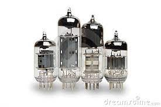

Las computadoras de esta generación emplearon bulbos de vacío (también llamados tubos de vacío) para procesar la información. Los operadores ingresaban los datos y programas en código especial por medio de tarjetas perforadas. Usaban cilindros magnéticos para almacenar información e instrucciones internas.
Bulbos utilizados en la 1era generacion UNIVAC
UNIVAC fue la primera computadora diseñada y construida para un propósito no militar. Fue desarrollada para la Oficina del Censo en 1951 a fin de ayudar en el procesamiento de los datos del crecimiento poblacional. También en 1952 fue utilizada para predecir los resultados de las elecciones presidenciales de EE.UU. entre Eisenhower y Stevenson, con una muestra de apenas el 1% de la población votante la máquina predijo correctamente que Eisenhower ganaría.
Computadora Antigua Las generaciones de computadoras
Las computadoras de esta generación emplearon bulbos de vacío (también llamados tubos de vacío) para procesar la información. Los operadores ingresaban los datos y programas en código especial por medio de tarjetas perforadas. Usaban cilindros magnéticos para almacenar información e instrucciones internas.